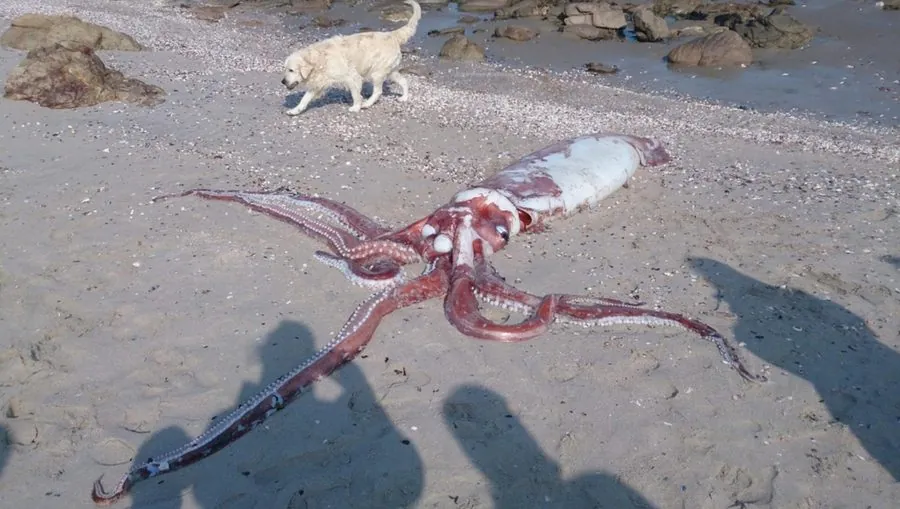

软体动物 · 动物界
大王乌贼 Architeuthis dux

深海中的巨型头足类，体长可达 13 m，眼睛直径超过 25 cm，是现存眼睛最大的动物，曾长期只靠搁浅标本和抹香鲸胃容物被认识。
- 分类
- 门软体动物门纲头足纲目枪形目科大王乌贼科属大王乌贼属
- 栖息环境
- 全球温带和亚热带的深海，常见于水深 300–600 m，最深超过 1000 m
- 地理分布
- 全球各大洋的温带和亚热带深海，包括大西洋、太平洋和南大洋
- 保护级别
- 暂无评估；中国未列入国家重点保护野生动物名录
物种志
大王乌贼的身体分为圆柱形的躯干和腕部，躯干末端有一对三角形的鳍。它有 8 条腕和 2 条极长的捕食触腕，触腕末端膨大成带有吸盘的“腕球”，用来捕捉猎物；吸盘边缘还长着角质齿环。它的眼睛极大，直径可达 25 cm 以上，是动物界中最大的眼睛。体色多为粉红色或深褐色，体长含长触腕可达 13 m，体重最大记录约 300 kg。
大王乌贼生活在全球各大洋温带和亚热带的深海水域，常见于水深 300–600 m 处，最深记录超过 1000 m，活体极难观察。它是肉食性动物，用长触腕捕捉深海鱼类和其他乌贼，再把猎物送到喙状口器前撕碎。抹香鲸是它的主要天敌，抹香鲸胃中常发现大量大王乌贼的角质喙，两者之间的搏斗痕迹也常见于鲸的皮肤上。2012 年，日本科学家在约 630 m 深处首次拍摄到活的野生大王乌贼影像。它的繁殖习性了解很少，已知雄性通过特化的交接腕传递精荚，卵产在深海，幼体形态与成体差别较大。目前它没有IUCN 的正式评估，中国也未将其列入国家重点保护野生动物名录。
形态与习性
- 食性捕食深海鱼类和其他乌贼，用长触腕捕获猎物
- 体长含长触腕总长可达 13 m
- 体重最大记录约 300 kg
- 眼睛直径可达 25 cm 以上，是动物界最大的眼睛
- 栖息深度深海 300–600 m，最深记录超过 1000 m
- 天敌抹香鲸等深海鲸类，鲸胃中常发现其角质喙
趣味知识
- 2012 年日本科学家在约 630 m 深处首次拍摄到活的野生大王乌贼影像。
- 大王乌贼的眼睛直径可达 25 cm 以上，比人的头部还大，是动物界之最。
- 抹香鲸是它的主要天敌，鲸胃中发现的乌贼喙数量常常以万计。